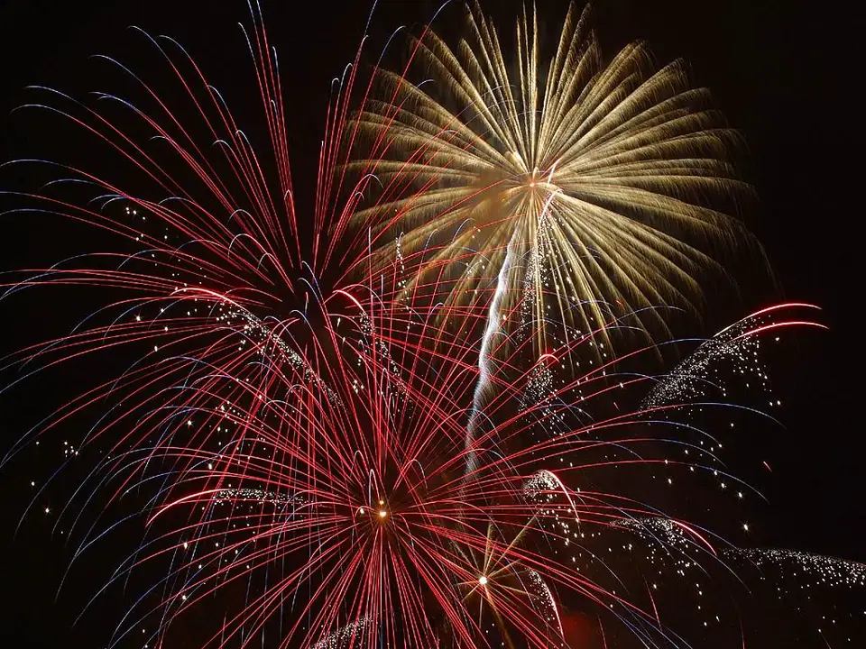
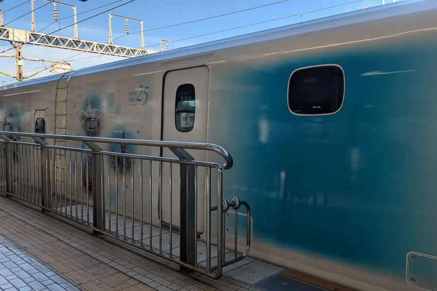

01 / NUBES DEL FUJI
El monte Fuji se pone un sombrero nunca visto.
El monte Fuji puede cambiar de un viaje a otro. Mira la cima y después el cielo de al lado: una nube puede posarse como un sombrero o flotar separada de la montaña.
Qué buscar por la ventanilla
- Nube de sombrero: sobre la cima
- Las kasagumo pueden tocar la cima o flotar justo encima. Compara el borde de la nube con el contorno de la montaña.
- Nube tsurushi: una lente junto a la montaña
- Las tsurushigumo tienen forma de lente, a veces ovalada o parecida a un ala. Observa su forma y posición: la separación de la montaña no basta para identificarlas, porque las nubes de sombrero también pueden flotar sobre la cima.
¿Cómo se forman? ¿Anuncian lluvia?
El aire húmedo que asciende sobre una montaña puede enfriarse y formar nubes. Las tsurushi se relacionan sobre todo con ondas de montaña: aire que sube y baja tras cruzarla. Tres años de observaciones de la Universidad de Tsukuba hallaron distintos perfiles de viento y humedad para las nubes de sombrero y las tsurushi.
Una nube en forma de sombrero puede mantener su forma mientras el aire la atraviesa: se forma a barlovento y se evapora a sotavento. No garantiza lluvia. Las nubes Hata, con forma de bandera, se originan en condiciones diferentes.
Desde el tren en marcha, observa cómo se superponen la nube y la montaña. Consulta la guía para ver el Fuji para conocer el tramo y el lado del asiento.
Las nubes del Fuji desde el Shinkansen
Estos registros se presentan con el texto de las publicaciones y los títulos originales de los vídeos.
年明けお伊勢さんに向かう新幹線で出逢った素敵な富士山🗻 #富士山 #笠雲 #天使の輪
— 荒木尚子 (@arakihisako) 元投稿
X · NUBE DE SOMBRERO
Un halo de ángel desde el Shinkansen
荒木尚子 · @arakihisako Ver la publicación original ↗Publicado como nube de sombrero. Compara la nube con la cima.
YOUTUBE · NUBE LENTICULAR
Una nube lenticular sobre el monte Fuji
hiroe uehara · published July 2020 Ver el original ↗Presentado como nube tsurushi. Mira junto a la montaña y compara su forma.
YOUTUBE · NUBE DE SOMBRERO
¿Un sombrero? ¿Humo? Un Fuji diferente
こっとん健児チャンネル · published December 2020 Ver el original ↗Presentado como nube de sombrero. Observa la superposición mientras avanza el tren.
FUENTES
- Tres años de observaciones de nubes y sus condiciones de formación — Universidad de Tsukuba (2025, en japonés) ↗
- La forma de las nubes de sombrero y su relación con el tiempo — Oficina Fuji Sabo del MLIT (en japonés) ↗
02 / ARCOÍRIS
No hay dos arcoíris iguales.
Seis ventanillas, cada una con un lugar, una cantidad de lluvia y un ángulo de luz diferentes. Pulsa reproducir y el vídeo se cargará desde la publicación original.
YOUTUBE · SHINAGAWA
Un arcoíris desde el Shinkansen
akkiihiking · filmed on 7 January Ver el original ↗新幹線から虹が見えた🌈いいことありそう❣️E席サイコー！
— iyoriliryco (@mwWCISYETxuycVj) 2023年12月2日
X · 2023.12.02
Un arcoíris desde el asiento E
iyoriliryco · @mwWCISYETxuycVj Ver la publicación original ↗新幹線から見えた虹🌈✨ お友達と大感動でした😃
— じゅんのこ (@tag_jun29) 元投稿
X · 2025.11.10
Un arcoíris desde el Tokaido Shinkansen
矢吹丈 · @pousanpoposan Ver la publicación original ↗FUENTES
- Un arcoíris visible durante unos 40 segundos desde un Kodama cerca de Odawara — Hamajima Shoten YPC (en japonés) ↗
- Atravesar un arcoíris sobre los arrozales de Ukishima — el artículo original (en japonés) ↗
03 / NIEVE
Sekigahara desaparece bajo el blanco.
Entre Nagoya y Kioto, durante unos minutos, la ventanilla se abre a un paisaje de nieve.
5 de febrero de 2022 · entre Nagoya y Kioto (punto exacto desconocido) · Foto: Shinkansen Window — verlas más grandes en X ↗
La nieve cambia durante el viaje
YOUTUBE · CERCA DE MAIBARA
Nieve desde la ventanilla del tren
G3from1967 · published January 2021 Ver el original ↗新幹線車窓から ④ 伊吹山等々。やっぱり凄い雪です。スプリンクラーがバシバシ当たります。
— てらちゃん (@730AEVA) 2021年12月28日
X · 2021.12.28
La ventanilla justo antes, el mismo día
てらちゃん · @730AEVA Ver la publicación original ↗FUENTES
- Por qué hay aspersores en el tramo de Sekigahara y los trenes reducen la velocidad con nieve — JR Central sobre la regularidad del transporte (en japonés) ↗
- De Gifu-Hashima a Maibara: la frontera de prefecturas de Sekigahara bajo la nieve — un registro desde la vía (en japonés) ↗
04 / RAYOS
Por un segundo, el cielo se abre.
Los rayos son lo más difícil de encontrar documentado aquí. Duran tan poco que, cuando se abre el obturador, ya han desaparecido.
YOUTUBE · 22 AGO. 2017 · NOZOMI 246
Una supercélula vista desde el Tokaido Shinkansen
T.sound channel · from near Gifu-Hashima through Nagoya to just before Mikawa-Anjo Ver el original ↗YOUTUBE · NOZOMI 54 · PUBLICADO EN JULIO DE 2024
Rayos desde la ventanilla del Nozomi 54
kaomaru42 Ver el original ↗YOUTUBE · NOZOMI 54 · PUBLICADO EN JULIO DE 2024
Rayos desde el Nozomi 54 (segundo fragmento)
kaomaru42 Ver el original ↗FUENTES
- La misma supercélula, reeditada a cámara ultralenta por el mismo canal — T.sound channel ↗
- Los días de tormenta alcanzan su máximo en invierno junto al mar de Japón y en verano en el interior — Observación y estadísticas de tormentas de la JMA (en japonés) ↗
- Una cuadrícula de 1 km, actualizada cada 10 minutos, con previsión de una hora: consulta el cielo de tu ruta antes de subir — Predicción inmediata de rayos de la JMA (en japonés) ↗
OTRA PERSPECTIVA
Las vistas con fecha están en otras guías.
Estas vistas no dependen del tiempo. Puedes planearlas por fecha y hora.

FUEGOS ARTIFICIALES · 8 eventosFuegos artificiales desde la ventana
Fuegos artificiales a lo largo de la ruta, vistos desde el tren.
 NOCHE · 15 escenas nocturnas
NOCHE · 15 escenas nocturnasTokaido Shinkansen de noche
Mira dónde empieza la noche según tu hora de salida.

LIMITADO · DECORACIÓN TEMPORALShinkansen de Disney
Comprueba en el horario si puedes verlo.
Sobre el material de esta página
Esta web no almacena los vídeos ni las publicaciones. Son inserciones oficiales de X y YouTube, cargadas desde la publicación del creador al reproducirlas. Cada tarjeta enlaza al original.